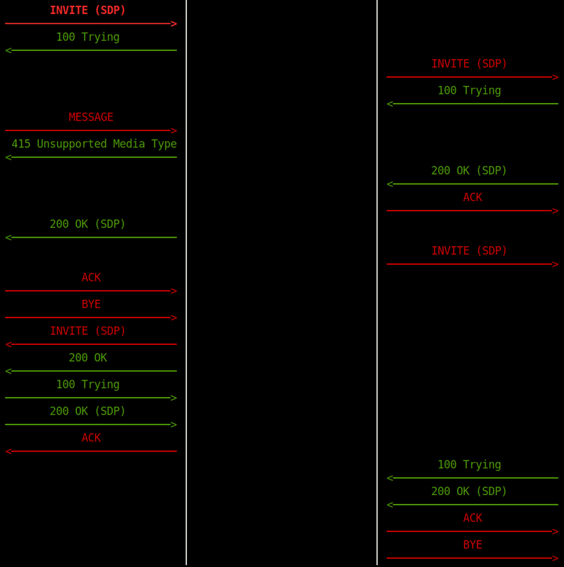
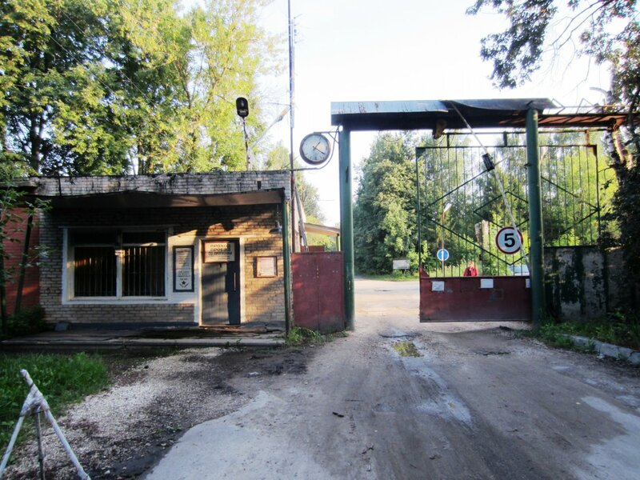
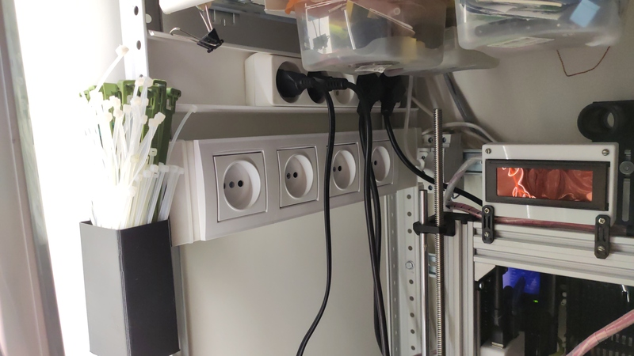
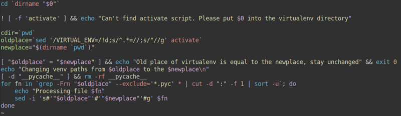

Очередное рабочее

Ты пожалуй, неплохо разбираешься в том, что ты делаешь, если можешь простым языком объяснить любому человеку с любым образованием суть и аспекты своей деятельности.
Менеджеры попросили "по-человечески русским языком" объяснить, что происходит на скриншотах приложения, захватывающего и аггрегирующего данные сип сессий. Пришлось переводить на язык простых смертных.
Краткая сцена, описывающая суть происходящего на скриншотах выше. Действующие лица: Вася - сервер компании Вася, Коля - наша промежуточная Петяка, которую я настраиваю, Петя - боевая Петяка.
Теги: админское
Про упёртость, логику, бюрократию и внутреннее раздражение

У вас бывает такое, что в силу определённых обстоятельств вам необходимо сделать что-то, что не укладывается в ваши представления о прекрасном / правильном / логичном? Насколько это вас раздражает и как вы с эти боретесь? Казалось бы, на работе тебе платят деньги за то, что ты решаешь определённые задачи. И решаешь их в той форме, в которой это нужно заказчику. Если заказчик требует, чтобы ты забил гвозди микроскопом - бери и забивай, ты ведь осознаёшь, ради чего ты выполняешь эти действия. Но микроскоп всё-равно жалко - вот он, новенький блестящий, только что с завода! И ладно, если бы забивать гвозди должен был гипотетический Вася, но нет - ты должен сделать это сам своими руками и это бесит больше всего.
Теги: админское, подгорание
Выпуск подкаста с моим участием о 3D печати

Относительно недавно я снова принял участие в подкасте "Опытные на кухне". Ссылка на выпуск находится тут. Выпуск был сделан по мотивам вот этого моего поста. Особое спасибо пользователю с ником Sid за позитивную оценку моей деятельности в телеграм чате подкаста, было приятно.
Теги: подкасты, 3d-printing
Об осторожности, китайском наплевательстве и потенциальной угрозе взрыва

Казалось бы, что может пойти не так, когда ты просто вставляешь аккумуляторы в пустой отсек, который ни к чему не подключен?
Хочу предупредить всех, что что-либо заказывает из Китая (да и не только) об осторожности и возможных последствиях. Сегодня я потерял бдительность и чуть не поплатился за это. Для своего небольшого одноплатника, управляющего умным домом, я собирался сделать блок бесперебойного питания и для этого уже давно приобрёл на алиэкспресс блок на два аккумулятора. Жаль, перед тем как выкинуть то, что от него осталось, не догадался это сфотографировать...
Вы знаете, как горит литий? Я слава богу знаю это только по видео. Кто не в курсе, вот вам наглядные эксперименты от Креосана. Помню ещё видео с камеры наблюдения, где бомбанул ноутбук, стоящий на зарядке - очень впечатляет. Одним словом - никому не пожелаю возгорания литиевого аккумулятора, особенно дома.
Теги: подгорание, жизненное
Повышение уровня интеллекта розеток дёшево и предельно сердито

Вопрос: сколько может стоить блок из четырёх отдельно управляемых розеток, если в радиусе полуметра уже над чем-то трудится какой-нибудь одноплатный * Pi?
Ответ: столько, сколько может стоить отрезок кабель канала, набор тупых розеток (зависит от того, что выберете), полметра провода и блок реле (примерно 200 рублей). У меня ориентировочно вышло около 650 рублей, причём бОльшая часть стоимости пришлась на розетки и рамку.
Скрипт для быстрого перемещения python virtualenv

Уже в который раз сталкиваюсь с тем, что при перемещении какого-либо проекта из одной директории в другую при использовании virtualenv возникает проблема, связанная с тем, что при создании virtualenv в скрипты окружения прописываются абсолютные пути до интерпретаторов и всего прочего. Конечно, можно в старом окружении выгрузить список исопльзуемых библиотек через pip3 freeze > requirements.txt и потом в новом поставить библиотеки из списка через pip3 install -r requirements.txt, но такой подход занимает время, особенно если его использовать на одноплатных компьютерах, не отличающихся ни наличием быстрого flash накопителя, ни быстрого процессора, ни быстрого интернета. Особенно это актуально, когда в проекте несколько десятков тяжёлых библиотек и env весит под несколько сотен мегабайт. Сегодня мне это понадобилось для переноса директории с Home Assistant на OrangePi Zero. Решил, что "хватит это терпеть" и написал простой скриптик, который из activate получает старое значение VIRTUAL_ENV, из текущего положения - новое и заменяет его во всех файлах, где это необходимо. Всё оказалось достаточно просто. Проверил - работает. Скрипт необходимо положить в директорию, где расположен activate (не забываем выставить исполняемый бит через chmod +x scriptname). Ниже его содержимое.
Топ вопросов о 3D печати и общие рекомендации начинающим
Ко мне периодически обращаются разные люди из моего окружения с вопросами, касающимися 3d печати, поэтому у меня сформировался список наиболее часто задаваемых вопросов, я их сейчас озвучу и, наверняка, для многих это окажется полезным. В этой статье я попытаюсь спустить с небес на землю мечтающих заработать на 3д печати и печатать всякую дребедень, скачиваемую из интернета. В другой статье - напишу о преимуществах 3D печати и возможностях, которые она открывает.
Теги: 3d-printing
Про прикручивание скрипта галереи к блогу

Давно назревала необходимость прикрутить к блогу какой-нибудь генератор галерей, но всё как-то руки не доходили и вот, сегодня дошли. Скажу сразу - я ничерта не смыслю в JavaScript, вёрстке и web дизайне (думаю, по внешнему виду моего блога это нетрудно заметить :)). Главными критериями были простота использования и отсутствие лишних наворотов. После перебора нескольких вариантов, наткнулся на следующий: https://nanogallery2.nanostudio.org/
Всё понравилось, решил попробовать. На странице проекта есть примеры и builder, который поможет подогнать значения параметров под требуемые.
Про умный дом, разношёрстность и закидывание деньгами

Я уже много тут писал про минимализм и попытки обойтись малым. Иногда стремление к этому выходит за рамки рационального. Скажем, мне намного дешевле с учётом стоимости моего времени купить какую-нибудь железку, чем пытаться сделать её самому, но иногда просто хочется сделать что-то именно своими руками, разобраться. К сожалению, в области радиоэлектроники и микроконтроллеров я дилетант и никак не могу найти времени чтобы в этом достичь хоть какого-то прогресса, но кое-что можно сделать и на этом уровне. Ещё меня постоянно кидает из стороны в сторону и я постоянно переключаюсь с умного дома на 3д печать, с 3д печати на моделирование, с моделирования на что-то ещё. Благо, что зачастую эти сферы соприкасаются друг с другом и навыки, полученные в одной оказываются полезными в иной там, где этого не ожидаешь.
Теги: smarthome, automatization, lifehack, minimalism